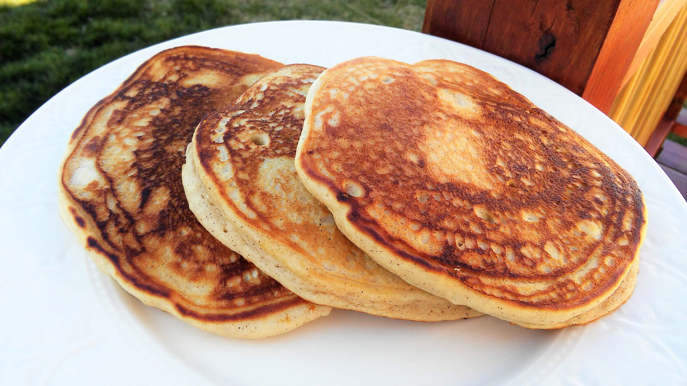

Ginger-spiced pancakes

Description
In hopes of creating pancakes that remind me of the Christmas season, I came up with these ginger pancakes.
These are a delicious way to celebrate Christmas breakfast with your family.
Ingredients
- 1 ⅓ cups milk
- 1 egg
- 1 tablespoon applesauce
- 2 tablespoons white sugar
- 1 teaspoon vanilla extract
- 1 teaspoon ground cinnamon
- 2 cups baking mix
- cooking spray
Steps
- Beat milk, egg, applesauce, ground ginger, vanilla extract, and cinnamon together in a bowl. Whisk baking mix into the milk mixture until just combined into a loose batter.
- Prepare a skillet with cooking spray and place over medium heat.
- Ladle about 1/4 cup batter into the prepared skillet; cook until bubbles begin to form on the top, 3 to 5 minutes.
Turn the pancake and continue cooking until the other side of the pancake is golden brown, 3 to 5 minutes more.
Transfer pancake to a plate and cover with a lid to keep warm. Repeat until batter is completely used.